정보보안기사 (2015-09-19 기출문제)
1과목: 시스템 보안
1. rlogin 시에 아이디와 패스워드 없이 시스템에 인증할 수 있다. 다음 중 관련된 파일은?
- /etc/hosts.deny
- /etc/hosts.equiv
- /etc/hosts.allow
- /etc/host.login
(정답률: 42%)

2. 다음 중 비선점 스케줄링에 해당되는 것은?
- 최단 작업 우선 처리
- 다단계 큐
- 순환 할당스케줄링
- 최단 잔여 시간
(정답률: 44%)
3. 다음 중 ing을 이용한 공격으로 ICMP_ECH0_REQUEST를 보내면 서버에서 다시 클라이언트로 ICMP_ECHO_REPLY를 보낸다. 이때, 출발지 주소를 속여서(공격하고자 하는) 네트워크 브로드캐스팅 주소로 ICMP_ECHO_RE_QUEST를 전달할 경우 많은 트래픽을 유발시켜 공격하는 기술은?
- 세션 하이젝킹 공격
- 브로드캐스팅 공격
- Tear Drop 공격
- Smurf 공격
(정답률: 42%)
4. 다음 중 아이 노드(i-node)에 포함하고 있는 정보가 아닌 것은?
- 파일 유형
- 파일 이름
- 링크 수
- 수정시각
(정답률: 55%)
5. 다음의 메모리 관리 기법 중 블록 사이즈 고정된 방식과 가변된 방식은 무엇인가?
- 페이징，세그먼테이션
- 힙, 쓰레드
- 논리 주소 공간, 물리 메모리
- 할당 영역，자유 영역
(정답률: 53%)
6. 다음 중 무결성 점검 도구로 그 성격이 다른 것은?
- tripwire
- fcheck
- md5
- nessus
(정답률: 52%)
7. 다음 중 포트와 서비스가 올바르게 연결된 것이 아닌 것은?
- WEB – 80
- IMAP – 110
- SSH – 22
- TELNET - 23
(정답률: 55%)
8. 다음 중 백그라운드 프로세스로 운영되면서 로그메시지를 받아 하나 이상의 개별 파일에 기록하는 데몬은 무엇인가?
- crond
- logd
- xinetd
- syslogd
(정답률: 55%)
9. 다음 중 레이스 컨디셔닝 공격에 대한 설명으로 올바르지 않은 것은?
- Setuid가 설정되어 있어야 한다.
- 임시 파일을 생성해야 한다.
- 임시 파일을생성할 때 레이스 컨디셔닝에 대응하지 않아야 한다.
- 임시 파일 이름을 공격자가 몰라도 된다.
(정답률: 50%)
10. 다음 중 루트킷에 대한 설명으로 올바르지 못한 것은?
- 로그 파일을 수정한다.
- 루트킷은 자기 복제가 가능해 다른 PC에도 설치된다.
- 시스템 흔적을 제거한다.
- 기존 시스템 도구들을 수정한다.
(정답률: 76%)
11. 다음 중 안티 루트킷의 주요 기능이 아닌 것은?
- 숨김 파일 찾기
- 수정된 레지스트리 찾기
- 프로세스 보호 해제
- 로그 파일 흔적 제거
(정답률: 56%)
12. 메모리 오류를 이용해 타깃 프로그램의 실행 흐름을 제어하고, 최종적으로는 공격자가 원하는 임의의 코드를 실행하는 것을 무엇이라 하는가?
- 포맷 스트링
- 버퍼 오버플로우
- 레이스 컨디셔닝
- 메모리 단편화
(정답률: 46%)
13. 다음 중 'lastb'라는 명령을 통하여 로그를 살펴볼 수 있는 로그 파일명은?
- utmp
- btmp
- dmGsg
- secure
(정답률: 63%)
14. 다음 중 윈도우의 암호 정책으로 포함되지 않는 항목은?
- 최소 암호 사용 기간
- 암호의 복잡성
- 최근 암호 기억
- 암호 알고리즘 종류
(정답률: 60%)
15. 다음 윈도우의 계정 잠금 정책 중 포함되지 않는 것은?
- 계정 잠금 기간
- 계정 잠금 임계값
- 계정 잠금 횟수
- 다음 시간 후 계정 잠금 수를 원래대로 설정
(정답률: 32%)
16. 다음 중 iptables에서 체인 형식으로 사용하지 않는 것은?
- OUTPUT
- INPUT
- DROP
- FORWORD
(정답률: 40%)
17. 리눅스 시스템에서 사용자가 최초 로그인 후에 생성되며, 사용자가 쉘에서 입력한 명령어를 기록하는 파일은 무엇인가?
- .bashrc
- .bash_profile
- .bashjiistoiy
- .cshrc
(정답률: 59%)
18. 다음 중 레지스트리 트리에 해당되지 않는 것은?
- HKEY一CLASS_ROOT
- HKEY—USERS
- HKEY_LOCAL__MACHINE
- HKEY一PROGRAMS
(정답률: 50%)
19. 다음의 운영 체제 구조에서 2계층부터 5계층까지 올바르게 나열한 것은?
- 프로세스 관리 → 메모리 관리 → 주변 장치관리 → 파일 관리
- 메모리 관리→ 프로세스 관리→ 주변 장치관리 → 파일 관리
- 파일 관리 → 프로세스 관리 → 메모리 관리 → 주변 장치 관리
- 주변 장치 관리 →프로세스 관리 → 파일 관리 → 메모리 관리
(정답률: 60%)
20. 다음 중 프로세스 교착 상태의 발생 조건아 아닌 것은?
- 상호 배제
- 점유와 대기
- 중단 조건
- 환형 대기 조건
(정답률: 62%)
2과목: 네트워크 보안
21. 다음 중 무선 암호 프로토콜 WPA, WPA2에서 공통으로 사용하는 프로토콜은?
- EAP
- IEEE802.1
- IEEE802.H
- WEP
(정답률: 31%)
22. 다음의 보기에서 설명하고 있는 기술은 무엇인가?
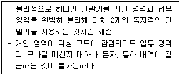
- MAM
- MDM
- 모바일 가상화
- MPS
(정답률: 58%)
23. 다음 중 베스천 호스트에 대한 설명으로 올바른 것은?
- 두 개의 스크린 호스트를 이용한다.
- 라우터 기능 외에 패킷 통과 여부를 결정할 수 있는 스크린 기능을 가지고 있다.
- 두 개의 랜 카드를 가진 호스트를 말한다.
- 보호된 네트워크에 유일하게 외부에 노출되는 내외부 네트워크 연결점으로 사용되는 호스트이다.
(정답률: 29%)
24. 다음 중 악의적인 의도를 가진 소프트웨어로 이에 감염된 봇들 다수가 연결되어 네트워크를 만드는 것을 무엇이라 하는가?
- C&C
- 봇 마스터
- 봇넷
- 봇클라이언트
(정답률: 76%)
25. 다음의 보기에서 VPN 프로토콜로 사용되는 것을 모두 고르시오.
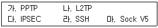
- 가, 나
- 가, 나, 다
- 가, 나, 다, 라
- 가, 나, 다, 마
(정답률: 45%)
26. 다음의 보기내용에 대한 설명으로 올바르지 못한 것은?
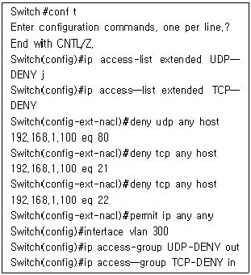
- 소스에서 타깃으로 ssh 차단된다.
- 소스에서 타깃으로 web이 차단된다.
- 소스에서 타깃으로 ftp가 차단된다.
- 소스에서 타깃으로 telnet이 차단된다.
(정답률: 34%)
27. 다음 중 스니핑 기법이 아닌 것은?
- Switch Jamming
- ICMP Redirect
- ARP Redirect
- Syn Flooding
(정답률: 45%)
28. 다음의 보기에서 허니팟에 대한 특징을 모두 고르시오.
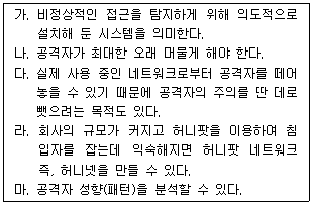
- 가
- 가, 나
- 가, 나, 다
- 가, 나, 다, 라, 마
(정답률: 68%)
29. 다음 중 세션에 대한 특징으로 올바르지 못한 것은?
- 세션은 일정한 시간동안 웹 브라우저를 통해 종료하기까지의 시간을 말한다.
- 세션은 클라이언트가 아닌 서버에 세션 아이디를 저장한다.
- 클라이언트 세션 아이디가 없으면 서버에서 발행해 생성한다.
- 세션은 서버나 클라이 언트 위치가 바뀌어도 계속 유지되어야 한다.
(정답률: 67%)
30. 다음 중 각 OSI 7 모델 중 계층과 프로토콜이 올바르게 연결된 것은?
- L2TP - 데이터 링크 계층
- IP - 전송 계층
- PPP - 물리 계층
- IEEE 802.11 - 데이터 링크 계층
(정답률: 52%)
31. 다음 중 MDM(Mobile Device Management)에 대한 설명으로 올바르지 못한 것은?
- 루팅을 하지 못하도록 제어가 가능하다.
- 하드웨어적 API를 이용하여 카메라 등을 제어한다.
- 분실된 단말기의 위치 조회 및 원격 제어가 가능하다.
- 보안상 특정 앱만 통제하는 방식을 말한다.
(정답률: 50%)
32. 다음 중 APT(Advanced Persistent Threat) 공격 시 진행 형태가 아닌 것은?
- 침투(Incursion)
- 탐색 (Discovery)
- 수집/공격(Capture/Attack)
- 방어 (Defence)
(정답률: 40%)
33. 침입 탐지 시스템에서 탐지 방법 중 악의적인 트래픽을 정상으로 판단하는 것을 무엇이라 하는가?
- False Positive
- False Negative
- FAR
- FRR
(정답률: 70%)
34. 다음 중 IP 프로토콜에 대한 설명으로 올바르지 못한 것은?
- 패킷 목적지 주소를 보고 최적의 경로를 찾아 패킷을 전송한다.
- 신뢰성보다는 효율성 에 중점을 두고 있다.
- 헤더에 VERS는 버전을 나타낸다.
- TTL은 데이터 그램이 라우터를 지날 때마다 값이 +1씩 증가한다.
(정답률: 48%)
35. 다음 중 ARP 프로토콜에 대한 설명으로 올바르지 못한 것은?
- IP 주소를 알고 있을 때 MAC 주소를 알고자 할 경우 사용된다.
- AEP 테 이블에 매칭 되는 주소가 있을 때 AEP 브로드캐스팅 한다.
- MAC 주소는 48비트 주소 체계로 되어 있다.
- Opcode 필드가 2일 경우는 ARP Rely 이다.
(정답률: 46%)
36. 다음 중 서비스 거부(DoS) 공격에 대한 대응 방안으로 올바르지 못한 것은?
- 입력 소스 필터링
- 블랙 홀 널(NULL) 처리
- 위장한 IP 주소 필터링
- 대역폭 증대
(정답률: 44%)
37. 다음 중 ARP 스푸핑 공격에 대한 설명으로 올바르지 못한 것은?
- 공격 대상은 같은 네트워크에 있어야 한다.
- 랜 카드는 정상 모드로 동작해야 한다.
- 정상적인 상황에서 2개 이상 IP 주소를 가진 MAC이 보인다.
- 공격자는 신뢰된 MAC 주소로 위장을 하고，악의적인 공격을 한다.
(정답률: 25%)
38. 다음 중 스니핑 방지 대책으로 올바르지 못한 것은?
- SSL 암호화 프로토콜을 사용한다.
- 원격 접속 시 SSH를 통해 접속한다.
- MAC 주소 테이블을 동적으로 지정해 놓는다.
- 스니핑 탐지 도구를 이용하여 정기적으로 점검한다.
(정답률: 48%)
39. 다음의 보기에서 설명하고 있는 네트워크 활용 공격 방법은 무엇인가?
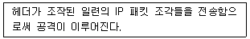
- DDoS
- Smurf
- Land 공격
- Teardrop 공격
(정답률: 45%)
40. 다음 중 침입 차단 시스템의 주요 기능으로 올바르지 못한 것은?
- 접근 통제
- 감사 및 로깅 기능
- 침입 분석 및 탐지
- 프록시 기능
(정답률: 20%)
3과목: 어플리케이션 보안
41. 다음 중 인터넷 표준 XML을 활용한 웹 표준 기술이 아닌 것은?
- UDDI
- OCSP
- SOAP
- WS이
(정답률: 58%)
42. 다음의 보기에서 설명하고 있는 프로토콜은 무엇인가?
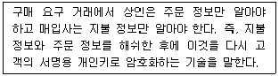
- 블라인드 서명
- 이중 서명
- 은닉 서명
- 전자봉투
(정답률: 69%)
43. 다음 중 신용 카드의 보안 코드 세 자리 번호와 관계가 없는 것은?
- CSS
- CID
- CW
- CVC
(정답률: 31%)
44. 다음 중 SSL 통신에서 한동안 통신을 하지 않다가 재통신할 때 보내는 메시지는?
- Server_Hello
- Client_Hello
- Certificate
- Abbreviated Handshake
(정답률: 52%)
45. 다음 중 돈을 맡기고 나중에 물건을 받으면 입금하는 시스템을 무엇이라 하는가?
- Payment Gateway
- 에스크로
- E-Cash
- Mondex
(정답률: 31%)
46. 다음 중 SSL 프로토콜에 대한 설명으로 올바르지 못한 것은?
- 보안성과 무결성을 유지하기 위해 마지막에는 HMAC을 붙인다.
- SSL/TLS의 가장 하위 단은 Record Protocol 이다.
- Record 프로토콜은 어떤 암호 방식을 사용할지 선택하는 역할을 한다.
- SSL/TLS를 시작하기 위한 최초의 교신은 암호화와 MAC 없이 시작한다.
(정답률: 8%)
47. 다음 중 전자 투표 시스템의 요구 사항으로 올바르지 못한 것은?
- 완전성
- 확인성
- 독립성
- 비밀성
(정답률: 34%)
48. 다음 중 FTP 서비스 공격 유형으로 올바르지 못한 것은?
- 무작위 대입 공격
- 스니핑에 의한 계정 정보 노출
- 인증된 사용자 FTP 서비스 공격
- FTP 서버 자체의 취약점
(정답률: 22%)
49. 다음 중 전자 화폐의 성질이 다른 하나는 무엇인가?
- Mondex
- E-Cash
- ChipKnip
- Proton
(정답률: 31%)
50. 다음 중 OTP(One Time Password) 방식에 대한 설명으로 올바르지 못한 것은?
- 동기화 방식은 OTP 토큰과 서버간에 미리 공유된 비밀 정보와 동기화 정보에 의해 생성되는 방식이다.
- 동기화 방식은 OTP 토큰과 서버간에 동기화가 없어도 인증이 처리된다.
- 이벤트 동기화 방식은 서버와 OTP 토큰이 동일한 카운트 값을 기준으로 비밀번호를 생성한다.
- 조합 방식은 시간 동기화 방식과 이벤트 동기화 방식의 장점을 조합하여 구성한 방식이다.
(정답률: 66%)
51. FTP 서버가 데이터를 전송할 때 목적지가 어디인지를 검사하지 않는 설계상의 문제점을 이용한 공격을 무엇이라 하는가?
- 어나니머스 공격
- 바운스 공격
- 무작위 대입 공격
- 스니핑 공격
(정답률: 46%)
52. 다음 중 메일 서비스 관련 프로토콜이 아닌 것은?
- MUA
- MDA
- MTA
- MDM
(정답률: 79%)
53. 다음 중 스팸 어세신의 분류 기준으로 올바르지 못한 것은?
- 첨부 파일 검색
- 헤더 검사
- 본문 내용 검사
- 주요 스맴 근원지와 자동 생성
(정답률: 27%)
54. 다음 중 S/MIME이 제공하는 보안 서비스가 아닌 것은?
- 메시지 무결성
- 메시지 기밀성
- 부인 방지
- 메시지 가용성
(정답률: 53%)
55. 다음의 보기에서 설명하고 있는 보안 전자 우편 프로토콜은?
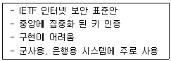
- PEM
- S/MIME
- PGP
- MIME
(정답률: 44%)
56. 다음의 보기에서 설명하고 있는 웹 보안 취약점은 무엇인가?
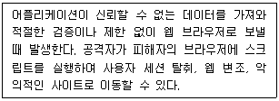
- SQL Injection
- XSS
- CSRF
- Webshell
(정답률: 35%)
57. 웹 취약점 공격 방지 방법 중 올바르지 못한 것은?
- 임시 디렉터리에 업로드 된 파일을 삭제하거나 이동한다.
- 첨부 파일에 대한 검사는 반드시 서버 측면스크립트에서 구현한다.
- 쿠키 저장 시 원활한 사이트 접속을 위해 타인이 읽을 수 있도록 한다.
- 사용 중인 SQL 구문을 변경시킬 수 있는 특수 문자가 있는지 체크한다.
(정답률: 68%)
58. 다음 중 Mod_Security 기능에 포함되지 않는 것은?
- Request Filtering
- Audit Logging
- No Understanding of the HTTP Protocol
- HTTPS Filtering
(정답률: 61%)
59. 다음 중 대표적인 윈도우 공개용 웹 방화벽은 무엇인가?
- Inflex
- WebKnight
- Mod_Security
- Public Web
(정답률: 35%)
60. 다음 중 DNS가 가지고 있는 보안 취약점을 극복하기 위한 DNS 확장 표준 프로토콜은?
- DNS Protection
- DNS Defence
- DNSSEC
- DNS Poisoning
(정답률: 83%)
4과목: 정보 보안 일반
61. 다음 중 올바르지 못안 것은?
- CRL은 갱신되어야만 폐기로 판단한다.
- CA가 인증서 폐기 시 폐기 목록을 일정한 주기마다 생성한다.
- OCSP는 무료로 사용이 가능하다.
- CRL은 비용 지불 없이 사용이 가능하다.
(정답률: 30%)
62. 다음 중 주체가 속해 있는 그룹의 신원에 근거해 객체에 대한 접근을 제한하는 방법은?
- 역할기반 접근통제
- 강제적 접근통제
- 임의적 접근 통제
- 상호적 접근 통제
(정답률: 31%)
63. 다음 중 커버로스에 대한 설명으로 올바르지 못한 것은?
- 패스워드 추측 공격에 취약하다.
- 커버로스는 공개키 방식을 이용하여 티켓을 발급한다.
- MIT에서 개발한 분산환경 하에서 개체 인증서비스를 제공한다.
- 커버로스는 4개의 개체로 구성된다.
(정답률: 41%)
64. 다음의 접근 통제 모델 중 보기에 알맞은 모델은 무엇인가?
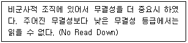
- 벨-라파둘라 모델
- 비바 모델
- 클락-윌슨 모델
- 접근 통제 매트릭스
(정답률: 45%)
65. 다음 중 암호화 알고리즘에 대한 설명으로 올바르지 못한 것은?
- 평문을 암호학적 방법으로 변환한 것을 암호문(Ciphertext) 이라 한다.
- 암호학을 이용하여 보호해야 할 메시지를 평문 (Plaintext) 이라 한다.
- 암호화 알고리즘은 공개로 하기 보다는 개별적으로 해야 한다.
- 암호문을 다시 평문으로 변환하는 과정을 복호화(Decryption) 라 한다.
(정답률: 68%)
66. 다음 중 SPN 구조와 Feistel 구조에 대한 설명으로 틀린 것은?
- Feistel 구조는 평문 두 개의 블록으로 나누어 배타적 논리합과 라운드를 가진다.
- Feistel 구조는 전형 적 인 라운드 함수로 16라운드를 거친다.
- SPN 구조는 역 변환 함수에 제약이 없다.
- SPN 구조는 S-BOX와 P-BOX를 사용한다.
(정답률: 52%)
67. 다음 중 전자 서명과 공개키 암호화 방식에서 사용되는 키로 알맞게 연결된 것은?
- 공개키 - 공개키
- 개 인키 _ 공개키
- 개인키 一 개인키
- 공개키 - 개 인키
(정답률: 40%)
68. 다음 중 RSA 암호 알고리즘에 대한 설명으로 올바르지 못한 것은?
- 이산 대수 어려움에 기반한 암호 알고리즘이다.
- 1978년 Rivest, Shamir, Adleman에 의해 만들어 졌다.
- 공개키 암호 시스템은 키 사전 분배를 해결하였다.
- 디지털 서명과 같은 새로운 개념을 출현시켰다.
(정답률: 50%)
69. 다음의 보기에서 성질이 같은 것으로 연결된 것은?
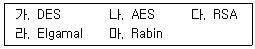
- 가, 나
- 가，다，라
- 다，라，마
- 나，다, 라
(정답률: 42%)
70. 다음 중 인증 기관(Certification Authority)에 대한 설명으로 올바르지 못한 것은?
- 인증서를 발급한다.
- 유효한 인증서와 CRL의 리스트를 발행한다.
- 인증서 상태 관리를 한다.
- 인증서와 CRL을 사용자에게 분배하는 역할을 한다.
(정답률: 59%)
71. 다음 중 WPKI의 구성 요소가 아닌 것은?
- RA
- WPKI CA
- CP 서버
- OCSP 서버
(정답률: 22%)
72. 다음 중 키 사전 분배 방식에 대한 설명으로 올바르지 못한 것은?
- 중앙 집중식 방식은 가입자가 비밀 통신을 할 때마다 KDC로부터 세션키를 분배 받는다.
- Blom 방식은 두 노드에게 임의 함수 값을 전송하면 두 노드는 전송 받은 정보로부터 두 노드 사이의 통신에 필요한 세션키를 생성한다.
- 중앙 집중식 방식의 대표적 인 분배 방식은 커버로스 방식이다.
- 중앙 집중식 방식 일 경우 암호 통신을 할 때마다 세션키를 변경할 필요는 없다.
(정답률: 48%)
73. 다음의 보기에서 설명하고 있는 서명 방식은 무엇인가?
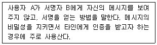
- 이중 서명
- 은닉 서명
- 전자 서명
- 영지식증명
(정답률: 54%)
74. 다음 중 Diffie-Hellman 키 교환 프로토콜에 대한 설명으로 올바르지 못한 것은?
- 1976년에 발표 되었으며，공개키 암호에 대한 시초가 되었다.
- 신분 위장이나 재전송 공격에 강하다.
- DH 알고리즘은 이산 대수 계산의 어려움에 의존한다.
- 네트워크상에서 A와 B가 비밀키를 서로 만나지 않고도 공유할 수 있는 방법을 제시하였다.
(정답률: 42%)
75. 다음 중 ITU에 의해 제안된 인증서에 대한 기본형식을 정의한 규격을 무엇이라 하는가?
- SOA
- CRL
- X.509
- OGSP
(정답률: 53%)
76. 다음 중 x.509 v3에서 확장 영역을 구분하는 것에 포함되지 않는 것은?
- 인증서 경로 및 규제 정보
- CRL을 위한 확장자
- 키 및 정책 확장자
- 공개키 정보
(정답률: 35%)
77. 다음 중 전자 서명의 특징으로 올바르지 않는 것은?
- 재사용 가능
- 위조 불가
- 부인 불가
- 서명자 인증
(정답률: 58%)
78. 다음 중 공개키 인증서의 구성 요소에 포함되지 않는 것은?
- 인증서 정책
- 인증서 경로
- 비밀키 인증서
- 인증서 철회 리스트
(정답률: 30%)
79. 다음 중 인증 기관의 역할별로 올바르게 연결되지 못한 것은?
- PAA - 정책 승인 기관
- PCA - 정책 승인 기관
- CA _ 인증 기관
- RA - 등록 기관
(정답률: 34%)
80. 다음 중 인증서 폐기의 사유가 아닌 것은?
- 비밀키 손상
- 기간 만료
- 공개키 손상
- 공개키 노출
(정답률: 33%)
5과목: 정보보안 관리 및 법규
81. 다음 중 정보보호 관리 체계(ISMS)의 관리 과정순서로 올바른 것은?
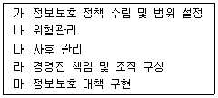
- 마-라-다-나-가
- 가-나-다-라-마
- 가-라-나-마-다
- 나-가-다-라-마
(정답률: 45%)
82. 다음 중 개인정보 유출 시 신고해야 하는 기관과 가장 관련이 깊은 곳은?
- 한국산업기술진흥원
- 한국콘덴츠진흥원
- 한국인터넷진흥원
- 한국정보통신진흥원
(정답률: 27%)
83. 다음 중 물리적 보안의 예방책으로 올바르지 못한 것은?
- 화재 시 적절한 대처 방법을 철저히 교육한다.
- 적합한 장비 구비 및 동작을 확인한다.
- 물 공급원(소화전)을 멀리 떨어진 곳에 구비한다.
- 가연성 물질을 올바르게 저장한다.
(정답률: 48%)
84. 다음 중 개인정보 수집 및 이용 시 정보 주체의 동의를 받지 않아도 되는 것은?
- 제한구역에 신분증을 받고 다시 반납할 경우
- 교사가 학생 상담을 위하여 수첩에 이름，주소 등을 기록할 경우
- 치과에서 스켈링 후 의료 보험을 적용할 경우
- 경품 제공을 위한 개인정보를 수집할 경우
(정답률: 46%)
85. 다음의 보기에서 정성적 위험 분석 방법으로연결된 것은?
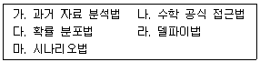
- 나，다，라
- 가，나，다
- 라，마
- 가，나，마
(정답률: 34%)
86. 다음은 위험 분석 방법론에 대한 설명이다. 올바르지 못한 것은?
- 과거 자료 분석법 : 과거 자료를 통하여 위험 발생 가능성을 예측
- 수학 공식 접근법 : 위험 발생 빈도를 계산하는 식을 이용하여 계량화
- 우선 순위법 : 전문가 집단을 이용한 설문 조사를 통한 조사 방법
- 시나리오법 : 특정 시나리오를 통해 발생 가능한 위협에 대해 결과를 도출해 내는 방법
(정답률: 46%)
87. 다음 중 외주 업체 정보보호 원칙으로 올바르지 못한 것은?
- 외주 업체는 수탁사로 위탁사 관리/감독을 받는다.
- 외주 업체가 내부와 동일한 정보보호 정책을 적용한다.
- 외주 업체도 내부와 동등한 권한을 부여한다.
- 외주 업체가 내부 서버 접속 시 외주 업체 책임자에게 확인을 받는다.
(정답률: 32%)
88. 다음 중 전자서명법에 대한 설명으로 올바르지 못한 것은?
- 전자서명 생성 정보는 전자서명을 생성하기 위해 이용하는 전자적 정보를 말한다.
- 전자서명 검증 정보는 전자서명을 검증하기 위해 이용하는 전자적 정보를 말한다.
- 인증은 전자서명 검증 정보가 가입자에게 유일하게 속한다는 사실을 확인하고, 증명 하는 행위를 말한다.
- 인증서는 전자서명 생성 정보가 가입자에게 유일하게 속한다는 사실을 확인하고，이를 증명하는 전자적 정보를 말한다.
(정답률: 41%)
89. 다음의 ( ) 안에 알맞은 용어는 무엇인가?
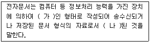
- 가 - 전기적，나 _ 정형화
- 가 - 전자적，나 - 표준화
- 가 - 전기적，나 - 표준화
- 가 - 전자적，나 - 정형화
(정답률: 50%)
90. 다음 중 대통령 직속 기구에 속하는 기관은?
- 정보통신기반보호위원회
- 개인정보보호위원회
- 공정거래위원회
- 국가권익위원회
(정답률: 22%)
91. 다음의 보기에서 설명하는 위험 분석 접근법은 무엇인가?
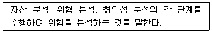
- 베이스 라인 접근법
- 비정형 접근법
- 상세 위험 분석
- 혼합 접근법
(정답률: 35%)
92. 다음 중 위험 통제 시점에 따라 통제 구분에 포함되지 않는 것은?
- 예방통제
- 탐지통제
- 교정 통제
- 잔류 위험
(정답률: 21%)
93. 다음 중 업무 연속성에서 사업 영향 평가의 주요 목적에 포함되지 않는 것은?
- 핵심 우선 순위 결정
- 복구 계획 수립
- 중단시간산정
- 자원 요구 사항
(정답률: 20%)
94. 다음 중 사례 연구 또는 시나리오 기반으로 복구, 운영 계획 집행 및 절차에 대한 제반 사항에 대해 1차 사이트에서 가상으로 수행하는 복구 테스트 방법은?
- 체크 리스트
- 구조적 점검
- 시뮬레이션
- 병렬테스트
(정답률: 62%)
95. 다음 중 OECD 정보보호 가이드라인에 포함되지 않는 것은?
- 대책
- 대응
- 책임
- 인식
(정답률: 4%)
96. 다음 중 유럽의 보안성 평가 기준은 무엇인가?
- ITSEC
- TCSEC
- CTCPEG
- DTIEC
(정답률: 42%)
97. 다음 중 정보보호 관리 체계의 정보보호 관리 과정에 포함되지 않는 것은?
- 정보보호 정책 수립 및 범위 설정
- 사후 관리
- 정보보호 대책 구현
- 구현
(정답률: 35%)
98. 다음 중 정보보호 관리 체계에서 접근 통제 분야에 포함되지 않는 것은?
- 사용자 인증 및 식별
- 접근 권한 관리
- 데이터베이스 접근
- 침해 시도 모니터링
(정답률: 44%)
99. 다음 중 정보통신망 이용 촉진 및 정보보호 등에 관한 법률에서 정보통신서비스 제공자가 이용자의 개인정보를 이용하려고 수집하는 경우 알려야 하는 사항에 포함되지 않는 것은?
- 개인정보수집 목적
- 수집하려는 개인정보의 항목
- 개인정보 보유 기간
- 동의하지 않을 시 불이익
(정답률: 41%)
100. 정보통신망 이용 촉진 및 정보보호 등에 관한 법률에서 개인정보 유효 기간제로 인하여 로그인하지 않는 개인정보는 별도 보관이나 파기해야 한다. 다음 중 개인정보 유효 기간은 얼마인가?
- 1년
- 3년
- 5년
- 7년
(정답률: 30%)